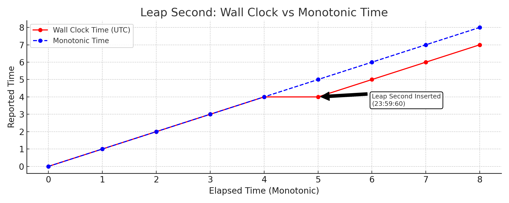

The Chaos of the Leap Second (2012): When Time Broke Java and the Cloud
Posted on Tue 15 April 2025 in Incident Retrospectives
🕐 What Happened?
On June 30, 2012, a leap second was inserted into atomic time via NTP to keep UTC aligned with Earth’s rotation. At 23:59:60 UTC, global systems experienced a hiccup — a single extra second that caused widespread disruptions across Reddit, LinkedIn, Yelp, Google, FourSquare, and many more.
What followed were 500 errors, high latency, and CPU usage spikes that crippled backend services.
🔍 Why Did It Break?
Though seemingly minor, the leap second broke systems in subtle and severe ways:
- Java Runtime Sensitivity: Popular JVM versions at the time failed to handle the repeated 23:59:59 correctly. This triggered runaway CPU usage via thread timing bugs, particularly in services running Hadoop, Cassandra, and Elasticsearch.
- Userland Misbehavior: While many Linux kernels handled the leap second without panic, userland libraries and runtimes (especially Java) choked under non-monotonic time changes.
- Cloud Weakness Exposure: An Amazon EC2 outage the day before had already left infrastructure strained. With fewer available instances, systems were more vulnerable when the leap second hit.
- Limited Real-World Testing: Simulating leap seconds under actual load, in full-stack distributed systems, proved nearly impossible. Pre-patch validations missed edge behavior.
🔥 Real-World Impact
This bug hit nearly every high-scale Java-based system:
- Stacks: Cassandra, Hadoop, Elasticsearch, JVM-based schedulers
- Companies: Reddit, Mozilla, Yelp, LinkedIn, Gawker, Facebook, StumbleUpon
- Behavior: High CPU loops, 500 errors, frozen services, delayed recovery due to restart complexity
In many cases, the kernel didn't fail — the chaos came from how services processed time at runtime.
🛠️ Mitigation & Takeaways
Immediate Fixes in 2012
- Rolling Restarts: Restarting affected Java services often cleared the CPU lock-up, though distributed services like Cassandra made this time-consuming.
- Manual Clock Reset: Some environments required forcibly resetting system time post-leap second. This fix was often applied via config tools like Puppet:
# CAUTION: Only use in environments that can tolerate manual time reset.
sudo /etc/init.d/ntp stop
date
date `date +"%m%d%H%M%C%y.%S"`
date
sudo /etc/init.d/ntp start
Modern Resilience Strategies
- Leap Smearing: Today’s
ntpd,chronyd, and cloud providers use “leap smear” — slowly adjusting clocks over hours to avoid time jumps entirely. - Use Monotonic Clocks: Time-sensitive logic should rely on
CLOCK_MONOTONIC, not wall-clock time, to measure durations safely.
 Figure: Monotonic time continues uninterrupted while wall-clock time repeats a second — highlighting why monotonic clocks are preferred for duration tracking.
- Monitor Clock Drift: Observability pipelines should expose clock sync state and NTP drift as first-class metrics.
- Design for Temporal Anomalies: Distributed systems should assume wall-clock time can regress, freeze, or desync — and gracefully degrade when it does.
- Simulated Testing Isn’t Enough: Always combine synthetic load with chaos testing under unusual real-world conditions (e.g., leap seconds, DNS failures, NTP skew).
📚 Epilogue
The 2012 leap second chaos wasn’t caused by incompetence — many teams patched, prepared, and tested. But the leap second hit during degraded cloud capacity, exposed fragile JVM behavior, and stressed assumptions in time-sensitive code.
A single second exposed fault lines in the foundations of the modern internet.
What other “just time” failures have caught you off guard in production? Let’s share war stories.
(Originally published in 2012. Revisited and revised in 2025 for modern SREs, DevOps, and distributed systems engineers.)